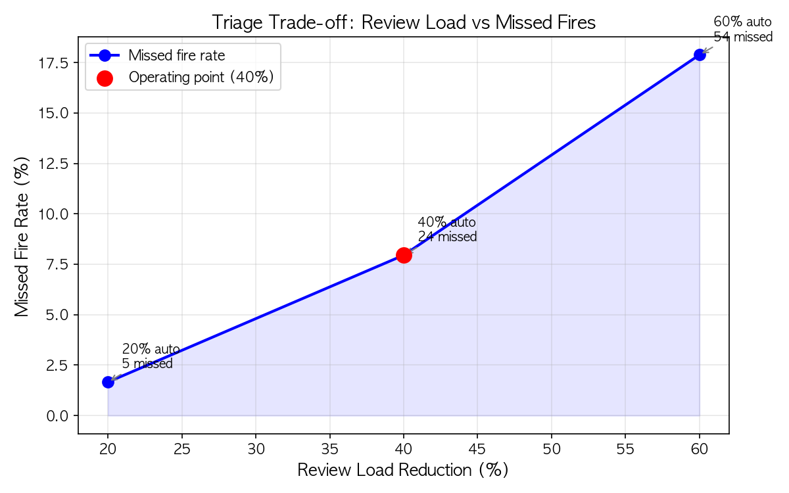
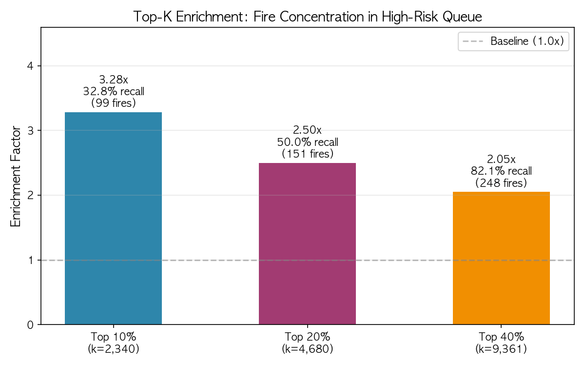
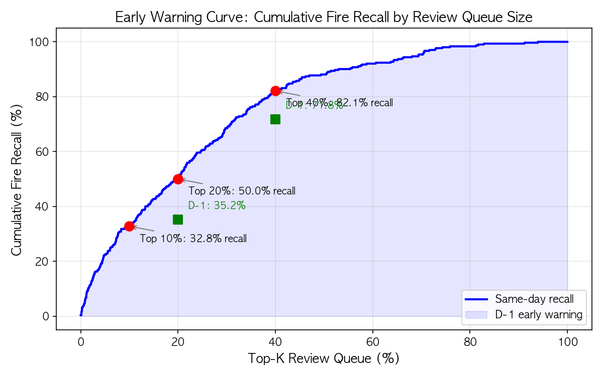
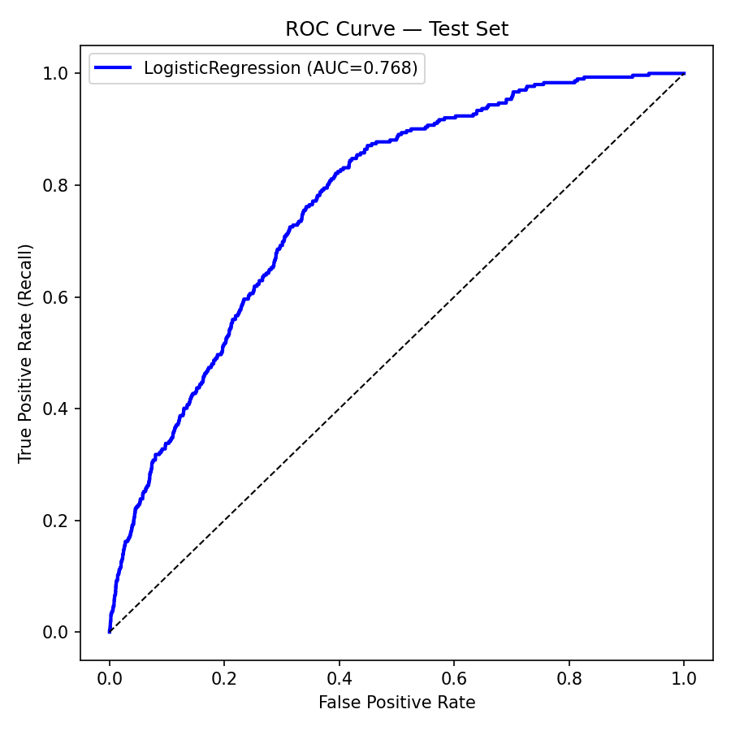
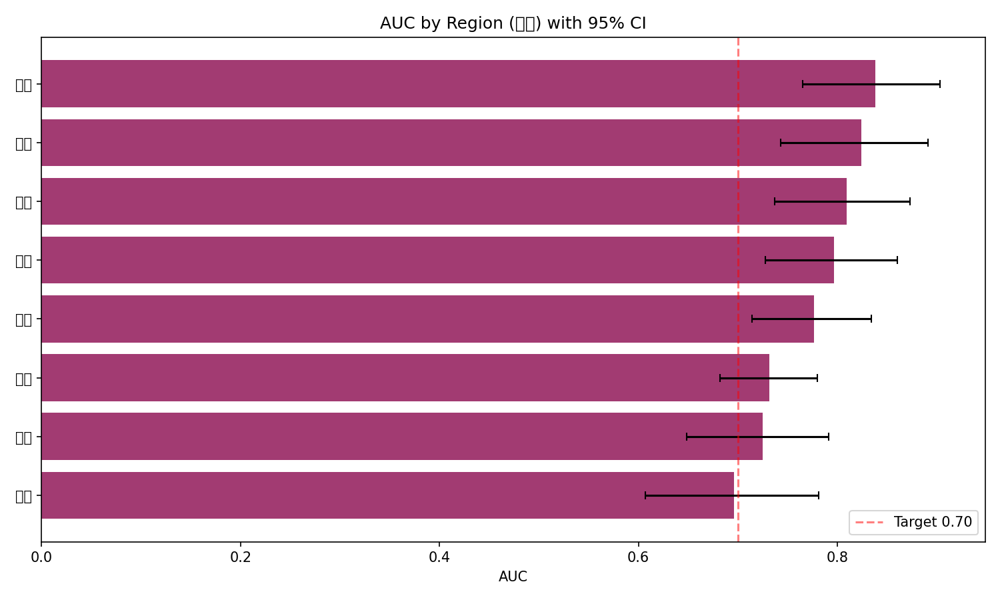
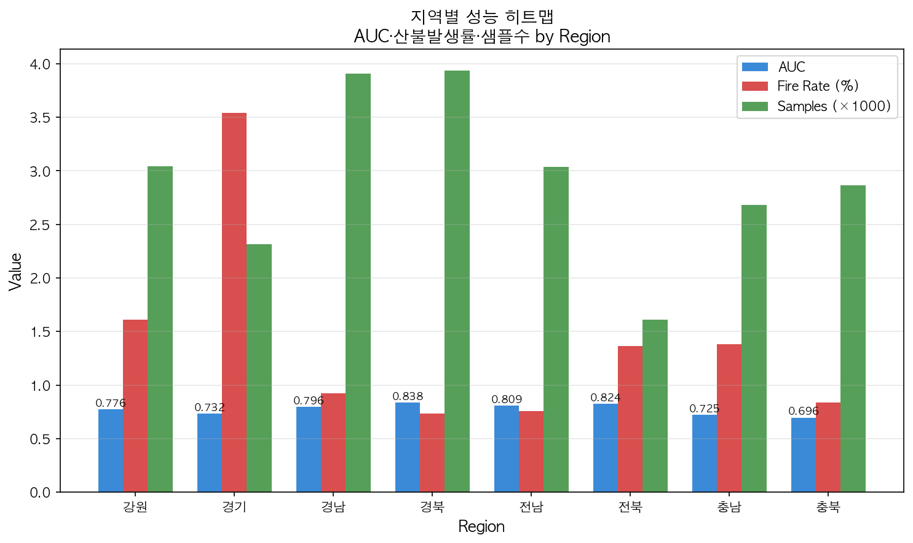

공개 산불통계와 국립산림과학원 산악기상 데이터로 시군구·일 단위 산불 위험을 예측하고, 위험 알림의 하위 구간을 AI가 자동검증으로 종결해 관제 인력의 검토 시간을 줄이는 자율검증 triage 서비스.
기존 산불발생예측 연구는 위험점수만 출력하고 멈췄다. 이 시스템은 그 위에 운영 규칙을 얹는다 — 위험점수로 정렬한 뒤 하위 40%는 AI가 자동검증으로 종결하고, 상위 60%만 관제 인력의 우선검토 큐로 보낸다.
자동검증 = "무조건 안전"이 아니라 사람 검토를 줄이는 대신 일부 놓침을 감수하는 운영 선택이다. 임계값은 검증셋에서 고정하고 테스트셋에서 재최적화하지 않았다.
이 시스템의 메시지는 “최고 성능”이 아니라 “측정된 운영 가치 + 드러낸 비용”이다. 놓친 산불과 예측 불가 구간을 성과와 분리해 그대로 공개한다.
재현은 셀링포인트가 아니라 분석이 믿을 만하다는 근거다. 참고 논문(KOSHAM 2023) 대비 정직하게 정리한다.
격차 원인: 데이터 기간 차이 · NIFOS 미커버 시군구 54개 · 산림/사회경제 정적 feature 미확보.
| 모델 | ROC-AUC | Recall | Specificity |
|---|---|---|---|
| Logistic Regression · 채택 | 0.7682 | 0.6391 | 0.7279 |
| RandomForest | 0.7382 | 0.5364 | — |
| XGBoost | 0.7088 | 0.6854 | 0.616 |
학습 2022–2023, holdout 2024–2025. train에만 SMOTE 1:1 적용, bootstrap 신뢰구간 산출. 모든 수치는 사전 고정한 평가 기준에 따른다.
| 데이터명 | 출처 · 기관 | 활용 목적 |
|---|---|---|
| 산림청 산불통계데이터 | data.go.kr 15121380 · 산림청 | 2022–2025년 시군구·일 산불 발생 라벨 구축 |
| 국립산림과학원 산악기상관측 | apis.data.go.kr 1400377 · 국립산림과학원 | 기온·습도·풍속·강수 기반 위험 feature (가점 대상) |
| 재현 기준 논문 | KOSHAM 2023 23(2):29–39 · 한국방재학회 | 성능·변수 구성 비교 기준선 |
| 도구 | 제공 · URL | 활용 방법 |
|---|---|---|
| scikit-learn (LR/RF/GB) | scikit-learn.org | 산불 위험 이진예측 재현 |
| XGBoost | xgboost.readthedocs.io | boosting 계열 비교 |
| Codex 멀티에이전트 파이프라인 | openai.com/codex · 2026 | 스펙 고정·산식 검증·집필 자동화 |
멀티에이전트 파이프라인이 산출한 실제 분석 결과물.





